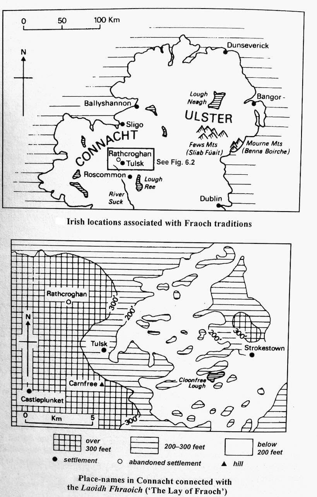

Notes to Poem XXVII
i. MS Text: The text of this poem begins on p. 301 of the MS (as numbered) and continues as far as p. 303. Staining affects the outer and upper margins of all three pages, but only at the left-hand corner of p. 303 does it obscure the reading of the text. Otherwise the text is clearly legible.
Occasional changes of spelling are attested, as well as some minor omissions which are corrected by the scribe. More serious emendation is found at q. 3 cd, where most of the original couplet is deleted, and an alternative reading provided in superscript. A further reading for this couplet is provided on the upper margin of the page. This suggests that more than one version of the poem was available, or that the exemplar may have contained alternative readings at this point. A single word is also cancelled in q. 1 c, with the provision of another in superscript, and this tends to support the possibility that more than one version of the ballad was used in producing the final BDL text.
Below the ascription, a later hand, possibly that of Dr Donald Smith, has written ‘Fraoch’.
Material unrelated to the text of the poem is found at the very top of the upper margin, and in the lower margin, of p. 301. Another poem begins at the foot of p. 303.3
ii. General background: Considerable interest attaches to this lay, which tells of the tragic death of Fraoch, a hero traditionally associated with the Ulster Cycle. Like the ballad on the death of Diarmaid (XIII) it was very popular in Gaelic Scotland later than BDL; but like the Diarmaid poem also, it was apparently much less popular in Ireland. On the Irish side, only one Gaelic version, from Rathlin Island, is known to survive (An Claidheamh Soluis, 27 July 1912), although a melodramatic English version was evidently current in Co. Roscommon.
Prose texts featuring Fraoch are also attested (Bruford, 97-8), and while at least two prose texts occur in Scotland (Nat. Lib. Scot. MS 72.1.40; MacInnes, Sgeul mu Fhraoch), the majority are found in Ireland. This pattern, too, can be compared with that of the Diarmaid story, although prose material relating to Diarmaid is more evenly distributed between Ireland and Scotland. More particularly, the prose account corresponding to the story of the ballad differs from the latter at a number of points of considerable significance, a situation which is also reminiscent of the relationship between the Diarmaid ballad and the principal Irish prose version of his death. Yet, while there are apparent correspondences between the two ballads and their relationship to certain prose versions, as well as basic similarities in the plot and structure of both ballads, it seems likely that the Fraoch ballad originated in Ireland, in spite of the surviving distribution pattern and in contrast to the conclusion reached in the case of ‘Laoidh Dhiarmaid’. We may now examine these topics more closely.
(1) The relationship between the BDL poem and the principal Irish prose versions of the story:
(a) ‘Táin Bó Fraích’ (TBF): It is generally accepted that this Old Irish prose tale consists of two sections, the first of which tells how Fróech mac Idaith of Connacht sought to win the hand of Findabair, daughter of Ailill and Medb, king and queen of Connacht. The second section narrates an expedition by Fróech to recapture his stolen cattle, which are said to be necessary to satisfy a condition laid down by Ailill for the gaining of his daughter (TBFM: Carney, Studies, 1-14). The sections show significant inconsistencies, and the relationship between them, as well as the origins of the individual parts, have been the subject of vigorous debate in recent years. This has led, in passing, to some discussion of the relationship between the first section of TBF and the present poem, which is very obviously similar in its theme and content, although by no means identical. Two views have emerged, and these may be summarised briefly.
The first is that of Professor James Carney, who regarded TBF as ‘a story that was deliberately composed in the early eighth or late seventh century. It had no oral existence prior to its composition at that date’ (Studies, 32). Carney set out to show the sources which had been used by the author of TBF, and he devoted considerable attention to the isolation of the material which he may have used in constructing the first section of the story (ibid., 35-6). By this argument, the ballad is seen as a modification of the tale told in the first section of TBF (ibid., 45), although at one point Carney admits that the ballad preserves the ‘traditional’ view of Fraoch’s death, which has been ‘violated’ by TBF (ibid., 33).
In his review of Carney’s theories, Professor Gerard Murphy dismissed the possibility that TBF began its existence as a unified work uninfluenced by earlier oral versions. Rather, Murphy advocated the basis of the second view, namely that TBF was known in some form before it was written down in its present shape. He argued that the written TBF was ‘a normal imperfect recording by a monastic scribe of a secular oral tale’ (Murphy, Review, 1956, 152-64) and he was ‘inclined to suspect that an ancestor of that oral tale was akin to the fourteenth-century ballad’ in certain respects. A somewhat similar opinion is expressed by the latest editor of TBF, Wolfgang Meid, who states that ‘TBF in the form in which it has come down is not a novel literary creation, but only one of several variants of an already pre-existing story’ (TBFM, x). As for the relationship between the ballad and the first part of TBF, Meid suggested a complex stemma with the following stages: (1) a Fróech saga in which the hero fights a watermonster, originating perhaps from speculation about Connacht place-names with the element fróech; (2) a tochmarc involving Fróech; (3) the bringing of Fróech’s fight into connection with Ailill and Medb of Connacht, with Medb taking an interest in Fróech and arousing Ailill’s jealousy, which leads to Fróech’s death by the monster; (4) the substitution of Findabair for Medb. At this point, according to Meid, the tradition splits into two branches: Version A, which is now represented by the ballad and by the Scottish folk-tale; and Version B, from which TBF is derived. In Version A, it is Medb who is jealous of Findabair, thus retaining the theme of jealousy; in Version B, the motivation for Fróech’s destruction is altered, with some important structural adjustments to the tale, such as the survival of Fróech. Although Meid hesitates to express himself so directly, what he is saying in effect is that the story preserved by the ballad is earlier than that in TBF, and that the latter is a revised version of the earlier tale.
Having looked at the principal theories about the relationship between the ballad and TBF, we may now examine the main differences in the telling of the tale in both sources, with some comment on their possible significance. The Early Modern forms of characters’ names will be used in the discussion from this point onwards.
(i.) The roles of the principal characters: In the ballad Fraoch is shown to be in love with Fionnabhair, daughter of Ailill and Meadhbh, and he incurs the jealousy of Meadhbh, since he will not behave improperly with her. Meadhbh therefore contrives his death (qq. 5-7). In TBF the excessive bride-price demanded by Ailill for Fionnabhair leads to the fear that Fraoch will elope with Fionnabhair, and Ailill sets events in motion for the disposal of Fraoch. In portraying Meadhbh as it does, the ballad is consistent with the seductive, domineering role ascribed to her in the literature of the Ulster Cycle. TBF does hint at this in making Meadhbh play a game of chess with Fraoch for three days and three nights after his arrival at the court (TBFM, paras. 8, 12), but the theme of her jealousy is not developed. Instead, Ailill is given an unusually prominent part, with the result that TBF shows Meadhbh in a relatively good light, with little obvious reference to sexual impropriety.
(ii.) The fetching of the berries: This procedure is of great importance to the plot of the ballad. Having been rejected by Fraoch, Meadhbh feigns an illness which can be cured only by the medicinal berries growing on a rowan tree. The tree is situated on an island, and it is protected by a venomous monster. Fraoch, who alone can fetch the berries, escapes unscathed on his first visit to the island as the monster is asleep, but, when he returns for more berries, the monster is awake and it attacks him (qq. 12-19). In TBF the berries are much less closely connected with the plot, although they do have some bearing on the outcome of the story. In the prose version, Fraoch goes to swim in a pool on the first occasion simply to please his hosts, who wish to see him swimming. Just before he comes out of the water, Ailill tells him to bring him a branch from a rowan tree growing on the river bank, since he (i.e. Ailill) thinks its berries beautiful. Fraoch is then sent back for more berries, and he is seized by the monster in the middle of the water (TBFM, paras. 15-18). Fraoch’s valiant efforts appear to be strangely weak in TBF, mainly because the berries have no more than an aesthetic appeal. As Carney notes: ‘The reason that Ailill gives to Froech for sending him across the water…is an unusual touch, rather strange and sophisticated for the Irish heroic milieu’ (Carney, Studies, 44-5). It is, however, hard to agree with Carney that the ballad develops the matter in the interests of ‘a more adequate motivation’; rather, one senses that there may be a link between the subdued role of Meadhbh in the TBF version and the ‘rather strange and sophisticated’ function of the berries.
(iii.) The encounter with the monster: The ballad and TBF do have some points in common in their descriptions of Fraoch’s encounter with the monster. In both, for instance, Fraoch is shown to be swimming without a weapon when he is attacked, and in both Fionnabhair supplies a weapon for him (qq. 20-21; TBFM. para. 18). In TBF, however, Ailill is furious when Fionnabhair swims out to Fraoch with a sword, and he hurls a spear at her. Fraoch catches the spear, and casts it back at Ailill. Carney draws attention to similarities between the TBF spear-throwing incident and the circumstances of Fergus mac Róig’s death in Aided Fergusa (Studies, 14-15, 39-40), and the influence of the latter cannot be ruled out.
In the ballad and in TBF, Fraoch succeeds in decapitating the monster (q. 23; TBFM, para. 18). but in the ballad, Fraoch’s hand is hacked off by the monster (qq. 21, 27), and he himself is killed (qq. 22, 25 ff.). In TBF, by contrast, events are portrayed very differently. Here Fraoch is certainly badly wounded, but he escapes death, since measures are taken to restore him to health (TBFM, para. 20). First, Ailill and Meadhbh are ashamed of their action, and they prepare a special bath for Fraoch. While he is in the bath, the sound of weeping is heard over Cruachain, and a body of women appear from the síd. Fraoch (whose mother is from the síd, according to TBF) goes with them into the Otherworld mound of Cruachain. The following evening he returns from the mound fully healed.
How are we to explain the discrepancy between the ballad and TBF? Professor Carney’s work here provides an important key. Carney points out that in the LU recension of Táin Bó Cúailnge there is a passage which describes the death of Fraoch at Ath Fraích in the south-east of Ulster. He is the first Connachtman to meet Cú Chulainn in combat, and he dies when Cú Chulainn holds him under the water of the ford. While he is being mourned, a band of women are seen bending over his body, and they take him into a fairy mound which is then called Síd Fraích (Studies, 66-76; cf. O’Rahilly, TBCLU, ll. 834-57). Carney’s view that this section, known as Aided Fraích, has been interpolated into the LU text is generally accepted, although his belief that it is modelled on an earlier incident in the same story has been rejected. Because of the similarity between certain aspects of Aided Fraích and the healing of Fraoch in TBF, Carney states (Studies, 76): ‘The obvious conclusion is that the author of TBF inserted into a text of TBC the later adventures of his synthetic hero.’
This conclusion follows logically from Carney’s thesis that TBF is a de novo literary creation, but it need not necessarily be correct. If one can raise the possibility that a version, or versions, of the first part of TBF may have existed before the writing of the prose tale, it is also possible that the Aided Fraích incident was interpolated into the LU text before TBF as we now know it was committed to writing. Indeed, one might go so far as to suggest that it was the association of Fraoch with Cú Chulainn and his alleged death in the premier cattle-raid of early Irish literature which exerted an influence over the fashioning of TBF, and the probable re-fashioning of earlier material relating to Fraoch to fit into a new frame. As Carney himself notes, the carrying of Fraoch into the Otherworld in TBF and his subsequent emergence ‘seems to be an artificial resurrection in order that he should fight another day; it is an anticipation of his fight against Cú Chulainn’ (Studies, 76).
(iv.) The finding of the ring: The ballad does not include any reference to a ring given by Fionnabhair to Fraoch as a pledge of their love. In TBF Fionnabhair gives Fraoch a thumb-ring which has previously been given to her by her father for safe keeping (TBFM, para. 13). When Fraoch goes swimming, Ailill opens his purse, finds the ring and throws it into the water. The ring is swallowed by a salmon which is caught by Fraoch. When Ailill demands the ring later (after Fraoch has been resuscitated), it is brought to him, much to his amazement (TBFM, paras. 16, 21-23). The ring has no place in the ballad since the poem is concerned with only one episode. TBF, on the other hand, is constructed round three ‘impossible’ tasks involving Fraoch – escaping alive from the pool, finding the ring, and tracing the lost cattle. Although it fits rather uncomfortably into the narrative, the ring incident acts as something of a bridge between the main sections of TBF (Carney, Studies, 37-9, 53-6; TBFM, xiv).
(b) The metrical version of TBF: The story of TBF is known in a metrical version beginning ‘Carn Fraoich, soitheach na saorchlann’ (CFSS). Its editor, Professor James Carney, considers that ‘the poem was written at the latest in the fourteenth century, and it is probably a century or more older’(Carney, CFSS, 154-94). Although CFSS follows the narrative of TBF fairly closely, it sometimes preserves points of detail which correspond to those in the ballad, and which may be represented differently, or may not appear, in TBF (Murphy, Review of Studies, 154-5). These points are as follows. CFSS seems to preserve the same location for the encounter with the monster, namely Loch [m]Bágha (CFSS, q. 38);34 it gives Meadhbh a leading role in sending Fraoch to fetch the berries, although Ailill’s compliance is also noted (CFSS, q. 40); it states that the monster wakened when Fraoch broke the branches (CFSS, q. 43); one of Fraoch’s hands is shattered, and although it is repaired, it is subsequently lost in another fight and buried in Carn Lámha (CFSS, qq. 48, 56-57). CFSS, however, differs from both TBF and the ballad in making Fraoch swim only once, and it would therefore appear to include some independent material. For this reason, its correspondences with the ballad are all the more interesting.
(c) Prose dindshenchas traditions about Fraoch: It is evident particularly from the BDL ballad and from CFSS that the story of Fraoch is closely connected with place-name lore. It is thus not surprising to discover material about Fraoch as part of an important compendium of dindshenchas known as the Rennes Dindshenchas (RD), which occurs in the fourteenth-century Yellow Book of Lecan (Stokes, Prose Tales from RD, 135-67). The relevant section is concerned with the naming of Carn Fraích (Carnfree, Co. Roscommon). The compiler gives two main accounts of how the place could have received its name.
First, he offers the tradition that the Fraoch in question was Fráech, son of Conall of Cruachu, who died in combat with Fráech Midlesach, son of the king of Spain, and a champion in the invading army of Eogan Taidlech. Carn Fraích marks the burial spot of this warrior. Second, the compiler tells how Carn Fraích could derive its name from Fraech son of Fidach who ‘went for love of Findabair to shake the rowan-tree that was over the black linn of Brei, which to this day is called the Suca; but the monster at the foot of the rowan-tree perceived him, and pursued him, and wounded him sorely. But Fráech brought Medb the monster in triumph, and the rowantree; and he was healed in the cairn, wherefore it is called Carn Fraích.’ Then he adds: ‘Or mayhap he was killed by the monster, and his grave is still in the cairn. But that is not the truth of the tale, for he fell by Cúchulainn, in a water-combat on the Driving of the Kine of Cualnge, at Ath Omna on the edge of Sliab Fuait.’ The compiler continues with the gist of the interpolation in TBCLU.
As the second explanation offered in RD is basically the same as the story found in TBF, it is of special interest that the compiler should add a qualification narrating the possible death of Fraoch by the monster and his burial in Carn Fraích, since this indicates that he knew a tale similar to that in the ballad. But even more interesting is the way in which he dismisses the story of Fraoch’s death as untrue in the light of the interpolation in TBCLU. This considerably strengthens the case for believing that the association of Fraoch with Cú Chulainn led to the revision of traditions relating to Fraoch for reasons of consistency and prestige.
(d) Conclusions about the relationship between TBF and the ballad: Much of the difficulty in assessing this relationship hitherto has lain in the comparatively late date (fourteenth century) assigned to the Fraoch ballad by most scholars (Carney, Studies, 33; TBFM, ix), and their consequent reluctance to accept the possibility that it may contain an earlier and more reliable version of the Fraoch story than that in the first part of TBF. There seems to be no adequate reason to date the ballad any earlier than the fourteenth century, but there are good grounds for believing that it represents the original story of Fraoch more faithfully than TBF. The plot of the ballad carries considerably more conviction than that of the prose tale; its characterisation of Meadhbh is wholly in keeping with that of the Ulster Cycle; and the fact that it concludes with the death of the hero, rather than with his narrow (and supernatural) escape, suggests a greater degree of realism on the part of the ballad.
Such a viewpoint implies that a version of the death of Fraoch existed before TBF was committed to writing, and that TBF has deviated from this version. How has such deviation come about? It scarcely seems necessary to invoke a stemma of the type suggested by Meid, or to regard the process as occurring primarily in oral transmission before TBF was written down. One could argue, in contrast to Meid (TBFM, xvi), that TBF did have an ‘author’, in the sense that a redactor brought together various traditions about Fraoch which already existed, and that he attempted to fuse them into a coherent biography. The stimulus in composing such a biography may have been provided by Fraoch’s association with Cú Chulainn in one of the versions of Táin Bó Cuailnge. The description of his death by Cú Chulainn would have led directly to the alteration of the tradition that he was slain by a water-monster. TBF itself clearly anticipates Fraoch’s participation in Táin Bó Cuailnge, and makes it a reiterated condition of his obtaining Fionnabhair (TBFM, paras 14, 24). The point is indeed crucial to the cohesion of the disparate sections of TBF. We may note, in passing, that while Fraoch’s participation in the great Táin may thus be a secondary development, it is logically explicable: as a warrior closely associated with the Connacht court, Fraoch would have been regarded as a fit match for the Ulster hero, Cú Chulainn.
The theory advanced above will be seen to share ground with the views of both Carney and Murphy. It agrees with Carney in entertaining the possibility of some deliberate shaping of TBF by an ‘author’ who tried to produce a biography of his hero; but it disagrees with the opinion that the ballad version was derived from TBF. Rather, it suggests that the story of the ballad was known to the ‘author’ of TBF. The latter point is in broad agreement with Murphy’s appraisal of the possible ancestor of TBF, but Murphy would have regarded the discrepancies between the two as the result of imperfect recording from an oral source.
(2) The provenance and later distribution of the BDL ballad: Qq. 1-3 of the BDL ballad refer to three place-names which were associated with the story of Fraoch: Cluain Fraoich, Carn Fraoich, and Cruachan. All three are located in Co. Roscommon (where they are anglicised Cloonfree, Carnfree and Croghan respectively). A fourth place-name found in the BDL MS text as loċ maie and transliterated as Loch Máigh (q. 8 a) may be a development of Loch mBágha, the name of a loch near Castle Plunket, again in Co. Roscommon (Murphy, Review, 154). Such evidence suggests strongly that the ballad originated in Ireland, and specifically in the area defined by these place-names. It is worth noting further that two of the places are particularly associated with a ruling family: Cruachan was the seat of the old rulers of Connacht, while latterly the fort of the O’Connors was located at Cloonfree, and it is not without significance that BDL contains a poem about the excellence of this fort in the time of Aodh O’Connor.
On the Scottish side, versions of the ballad have been found on the mainland and in the Hebrides, often connected with specific localities. In Perthshire the story was associated with the southern end of Loch Freuchie, some two miles to the west of Amulree (Gillies, p. 107). In Argyllshire, an island in Loch Awe known as Fraoch-eilean, not far from Kilchurn Castle, is linked with the tradition (Old Stat. Acc., VII, 346), and a version of the ballad was recorded at Port Appin (LF, 32). The ballad was also known in the Ross of Mull (ibid., 53), in Tiree, and in Uist (TGSI, XV (1890), 141-3). As the Perthshire and Argyllshire place-names suggest, the element fraoch (‘heather’) which corresponded to the hero’s name was probably of considerable importance in preserving his memory. Q. 25 of the BDL text seems to indicate that an adjustment had been made to allow the loch in question to be called ‘Loch Fraoich’ as an alternative to ‘Loch Máigh’, since a loch site was obviously of great importance to the story. Nevertheless, the later Scottish versions usually include all of the Irish place-names without any significant alteration. One wonders to what extent the association of the original Cruachan with Beinn Cruachan in Argyllshire may have helped to anchor the tradition in Gaelic Scotland.
The question remains as to why, if the ballad originated in the Roscommon district, it should have virtually disappeared in later Irish tradition. Part of the answer must surely lie in the discrepancy between the story of the ballad and that in TBF, supported by the weight of the Fraoch passage in TBCLU. In the light of these prose tales, the ballad might have been regarded as misleading by the custodians of Irish tradition, with the result that it survived principally in Scotland, where the ‘correcting’ force of TBF and TBCLU was not so strong.
iii. Later versions: Of the Scottish versions, the best preserved are those of Stone, McLagan MS 245, and Gillies. All three correspond closely to the BDL text in their general structure, following the order of its quatrains until BDL q. 25 or thereabouts. This is the point at which the formal eulogy of the dead hero begins, and the variation in the versions reflects the lack of a cohesive story-line in these quatrains. Stone, McLagan and Gillies omit BDL q. 27, but they include two quatrains not attested in BDL (Stone, qq. 29, 32; McLagan qq. 31, 33; Gillies qq. 31, 32). Stone omits one quatrain which is found in BDL (q. 30), McLagan (q. 27), and Gillies (q. 28). In spite of these differences, however, the degree of similarity between BDL and the three versions encourages the conclusion that they are descended from a common ancestor which was closely related to the BDL text.
If the versions of Stone, McLagan and Gillies bear a striking resemblance to the CDL text, they also have an interesting relationship to one another. Similarities of orthography, and in particular the use of capital letters, would seem to indicate that the texts of Stone and McLagan are derived from a common exemplar (Thomson, Catalogue, 217-8). McLagan’s text does, however, contain a considerable number of alterations, and several alternative readings, placed in the margins or at other points on the page. Quite apart from the intrinsic value of these emendations, they show an approach to the modification of text which is strongly reminiscent of that of the BDL scribes themselves. While the BDL text of the present ballad shows comparatively little emendation, extensive ‘correction’ is apparent in other BDL poems. In the case of the McLagan version, it is apparent that some of the emendations are derived from a text which was closer in certain respects to Stone than that on which McLagan’s original draft was based. Examples of such emendations occur at McLagan qq. 3 b, 8 d, 9 a, and 25 d. On the other hand, McLagan alters his text on several occasions where his original draft actually agreed with Stone. Examples of this process can be found at McLagan qq. 20 c, 20 d, 23 b, and 25 b. Other instances of both types of alteration can be found in the text. The overall result of McLagan’s editing is the creation of a text which is very close indeed to that published by Gillies, although the latter has a few distinctive words.
It is of particular interest that the McLagan text adds a note at the end of the poem stating, in Gaelic, that the last quatrain (beginning ‘Ionmhin Tighearn’ Ionmhin Tuadh’, and forming q. 35) ought to be placed, by rights, after q. 26. The Gaelic note reads: ‘Ann a nCoir se an ran̄ sho ata ar Dheirid 26 rann.’ The Gaelic note is cancelled and a similar English note is substituted below. The English note reads: ‘The last Ver. should be // a 26.’ (It is just possible that the cipher ‘// a’ could be read as ‘No.’. Cf. Thomson, ‘Catalogue’, pp. 217-218.) The quatrain in question does, in fact, appear as q. 26 of the Gillies edition. The likely conclusion to be drawn from this is that the Gillies text is based on a fair copy of McLagan’s emended version. Differences of spelling make it improbable that McLagan altered his original draft in the light of Gillies’s published text.
The fine condition of the texts of Stone, McLagan and Gillies is emphasised by the poorer quality of versions collected outside Perthshire. Part of the reason for the disparity may simply be that versions from other parts were generally recorded at a later stage, but one senses that the lay of Fraoch could have been of particular significance in Perthshire. Of the remaining versions, the fullest is that of MacNicol, where several BDL quatrains are missing (e.g. BDL qq. 7, 11, 23, 25, 27), and a number of couplets have been transposed. Campbell’s version also preserves a relatively full text, but it is affected by a lacuna in the MS, spoiling the central part of the poem. All but one of the first eleven quatrains of the BDL text are absent from MacFarlane’s version. A somewhat similar abbreviated text is found in MacDonald’s Uist collection, but it is preceded by seven quatrains beginning ‘An t-oglach o’n d’fhalbh a bhean’, which recount the names of heroes whose wives have left them. This sequence ends by listing the ‘righrean’ who were killed by ‘Moibh’ (presumably Meadhbh). This basic pattern is also found in MacKenzie’s version. The text recorded by Alexander Carmichael at Port Appin is partly prose and partly verse. The opening sentence refers to Meadhbh as ‘bean araidh ann an Raineach’, thereby locating the story in Perthshire.
iv. Metre: Rannaigheacht Mhór
v. Line annotation
Ascription: The transliteration of the name of the character to whom the poem is ascribed poses problems. In the MS this is in keich o cloan̄, and while the interpretation of MS in keich as an Caoch is beyond dispute, the remaining elements have been transliterated in two ways. E. C. Quiggin (Revue Celtique, XXXIII, p. 462) suggests that MS o cloan̄ represents Ó Clúmháin, and on this basis identifies the character with a fourteenth century Irish poet Caech Céise Ó Clúmháin. On the other hand, O’Rahilly (‘Indexes’, p. 50) considers that ó Chluain may be intended, with reference to Cluain Fraoich; as O’Rahilly notes, Cluain in this place-name is generally represented by cloan in the ballad (cf. 1, 14). O’Rahilly goes on to suggest that an Caoch ó Chluain may perhaps be equated with an Cam ó Chluain, the apparent composer of another BDL poem who is identified by O’Rahilly as ‘Ó Dubhagáin i. Cam Cluana, who was killed by the English in 1394’ (ibid., p. 41). The evidence does not allow one to choose decisively between O’Rahilly’s view and that of Quiggin; the present transliteration tends towards O’Rahilly, on the grounds that one might have expected something like o clowane in the MS if Ó Clúmháin were represented, but, given the nature of the MS orthography, this is arguable.
1 carad: charrit MS. On the significance of ch- in the MS, see coilean, XVI, 9 n.
2 <dhéanadh>: ȝane’ni MS. HP restores the MS form as do-ní, but suggests dhéanadh in a note; the latter possibility, adopted here, seems feasible orthographically; cf. XXVI, 112 n. A further suggestion might be that the MS could intend Osnadh dhian ní…
<buidheach>: This restoration follows what appears to have been the original reading, namely boy<tc>. This was later deleted, and trsyt, evidently representing tuirseach, ‘sad’, written immediately above and obscuring the lettering of the earlier reading. Later Scottish versions agree with the superscript. The superscript does, in fact, seem to make more immediate sense in the context; buidheach could mean ‘grateful, thankful’ in this context – but grateful for what? Perhaps for being alive, since the groan is that of a dying man (cf. 11-12 n). However, we need also to consider the possibility that the scribe’s eye may have slipped to 7, where buidheachas occurs, and that the original reading boy<tc> is an error.
5: <shoir>: It is difficult to know whether the MS form har is to be interpreted as shoir, ‘in the east’, or shiar, ‘in the west’. Ths implication of soir (MS sor) in 9 is that the poem was composed to the west of Croghan, and presumably therefore to the west of Carnfree and Clonfree. Thus it seems probable that we should read shoir (or thair as in HP) at this point; later Scottish versions would, however, support the reading shiar. With the latter, one supposes that the likely movement of the poem eastwards (with Croghan then in the west!) would have affected the reading; and it is not beyond dispute that this movement is not reflected in the BDL text.
11-12 The restoration of these lines follows the original MS reading Is see ȝi<a>ne i’ nosna throm freit mcfeich ny’ golk seŋ. This was later altered to Is see ver a hosna gyt throm i’in ayt ny’ golk seŋ, the alterations being made in superscript. The alterations would make the couplet read:
Is í bheir a h-osnadh
go trom
inghean <Aigheach> nan gcolg sean.
A third attempt at the couplet is found in the line written near the top of the MS page which reads Is say verri a hosni gi trome freit mcfeit ni golk s<e>n. This gives the couplet the form
Is é bheir a <h->osnadh
go trom
Fraoch mac Fiodhaigh na gcolg sean.
The difficulty has arisen over whose osnadh is referred to in the couplet. The original reading clearly ascribes the osnadh to Fraoch, as is consistent with q. 1. The second reading makes the osnadh that of Meadhbh (on her identity, and for a note on <Aigheach>, see 46 n), perhaps under the mistaken impression that the reference in the first couplet is to Meadhbh, when it is evidently to Fionnabhair (q. 4). The third reading looks like a cross between the first and second readings, perhaps attempting to reconcile them; if we allow that h- in the MS form hosni has phonetic value, the idea would be that Fraoch has caused the osnadh of the lady referred to in the preceding couplet; otherwise the reference would be to Fraoch’s osnadh, as in the first reading. Later versions have readings of the type represented by the third attempt in BDL, the closest being that of the text attributed to Stone in the Highland Society Report, p. 100, which has Ise fhag a hosan go trom trom / Fraoch Mac Fedhich na Colg sean; in the text in TGSI, XIV, p. 365, Stone’s reading is ’S e dfhag mosan go trom trom / Fraoch Mac Fedhich na’m [sic] Colg shean, which agrees with G and McL MS 245. With the original MS reading, however, cf. Gur e leig an osna throm / Fhraoch mac Feathaich nan colg sean (C). Note finally that MS see may represent either (s)é or (s)í.
17 <Orla>: orle MS. The name of Fionnabhair’s father was Ailill, gen. sg. Ailealla. The MS form attests -l- > -r- by dissimilation, and a change in the initial vowel from a- to o-; syncope appears also to have taken place, unless the MS could represent a form Oireall[a] on the assumption that MS -le might stand for -(e)all. Most later versions agree with St. Aon Inghean Choruill, but C offers an alternative form Orrail which is very close to that in BDL.
21 Moighe Faoi: mwe feye MS. The form of this place-name in E. Mod. Ir. would have been Magh Aoi; Mod. Ir. has Maigh Eo (Eng. Mayo). It is difficult to account for the initial f of the second element in the MS, unless it has developed from -gh of the first element (/ɣ/ > /f/). Cf. the change -ghth- > -f- which takes place in certain Irish dialects (de Bhaldraithe, The Irish of Cois Fhairrge, p. 105).
26 HP translates this line ‘his grace towards ladies could not save him from harm’. However, it seems likely that the idiom do-bheirim taobh re, ‘I trust in, confide in’, is involved (RIA Dict. s.v. taeb III), and that we should translate the line ‘he did not entrust himself to women from evil motives’, i.e. he went to help Meadhbh in all innocence.
27 mar a fuair: mor a foar MS. The line is hypermetric as it stands, and to restore line length, HP omits a.
a oidheadh: As Fraoch is naturally m., it seems that the h- of the MS form hoyc is merely graphic.
28 <innisead>: ’n<i>ssit MS. The uncertain letter of the MS form is slightly smudged, but it seems to be i rather than o; if it were the latter we could restore the normal classical form inneósad with confidence.
Osnadh: Here and at 60 and 100, the opening word of the poem is repeated as if there were a dúnadh; in each case, in fact, the last word of the line has the letters -os, which correspond to the first two letters of the poem in the manner of a dúnadh. This may be no more than a scribal reflex, but Henderson in his edition makes a division of the poem into four sections corresponding to these repetitions of Osnadh. The sections do seem to bear a relationship to the structure and development of the poem: thus I (qq. 1-7) sets the scene; II (qq. 8-15) describes Meadhbh’s illness and the significance of the caorthann; III (qq. 16-25) describes Fraoch’s fateful encounter with the monster; and IV (qq. 26-33) his burial, with formal elegy. Whether the poem was consciously composed in this way, or whether the scribe alone may have noted these apparent sections, is impossible to tell.
29 Loch Máigh: On its possible identification, see Section ii (2) above.
30 do-chímis: de chemist MS. Cf. II, 4 n.
<rē h-ais>: ȝa has MS. One way of making sense of the MS reading is to suppose that ȝ- in the first element is an error for r-, the scribe having accidentally extended the tail of the r-; there is also the possibility that r- may have been assimilated to the preceding -gh, for the phrase re h-ais which can mean ‘beside, by the side of’, see RIA Dict. s.v. 1 ais. We should perhaps consider reading ra ais, ‘beside it’, with reference to either the loch or the caorthann.
39 <b’fhóirithin>: This interpretation of the MS form borin gives excellent sense; fóirithin, ‘relieving, remedying’, is normally trisyllabic (RIA Dict. s.v.), and it seems likely that the MS form has lost a syllable.
cneadh: MS cneif reflects a dialectal form in which /ɣ/ has become /f/; cf. Luchd Chneimh (St., and similarly McL MS 245).
41 <am[a]sach>: amsyt MS. The restoration follows that in HP; the adj. amasach normally means ‘aggressive, quarrelsome’ (Dinn. s.v.) but here the sense may be ‘ready to attack’, with reference to the péisd in 43. Naim-cheist mhor a bha na Dheidh (St.).
’na dhéidh: This appears to be little more than a cheville; the force may be ‘nevertheless’.
45 The line lacks a syllable as it stands, and HP supplies the preverb do.
46 inghean <Aigheach>: y’in ayit MS. Meadhbh is known in TBC as ingen Echach Fedlig (TBCLU, p. 305). It would seem that the MS form ayit therefore represents a degenerate form of E. Mod. Eachach, gen. sg. of Eochaidh. Inghean Omhuich (St.); Nian Ouich (McL MS 245).
47-8 To obtain better end rhyme with saor in 46, HP switches the order of these lines, although the BDL order is preserved in the later versions. As the lines stand, it seems possible that a loose end rhyme could be obtained if, as happens in certain Irish dialects, -ao- in saor were pronounced /i:/, and if ria were pronounced /r'i:/ as the MS form ree might indicate. Nevertheless, the couplet lacks aicill, which is not remedied by reversing the order of the lines. The later versions are similar to St., which has Chuireadh le a fios air Fraoch / ’S dfhiosruigh an Laoch ciod e ’Mian.
48 fiosrugh[adh]: As it stands in the line, this would appear to be a pres. participle; HP improves the syntax by emending to d’fhiosrughadh.
49 nach <biodh>: nat be MS. The MS form could conceivably represent biadh, but cf. X, 11 n.
52 duine: dwneni MS. Cf. XXVI, 112 n.
dhā bhuain: ȝa woyna MS. HP emends to dá mbuain as if the reference were to the caora in 51, but the reference may well be to lán in 50.
53 m<é>: The MS form mee could represent mí (cf. III, 1 n, 9 n), but elsewhere in this poem (11-12 n), MS see evidently represents either (s)é or (s)í. Aicill would require mé.
55 gion gor: Ge’ ger MS. Cf. XIV, 4 n.
56 rachad: The normal 1 sg. fut. of téighim would be rachad, and the -s- of the MS form ratsit may simply be accidental.
60 Osnadh: See 28 n.
63 a h-anulta[ch]: HP restores the MS reading a ha’vlti as a sheanultach, which is translated ‘a great armful’, as if the prefix an- were in the restored form.
64 The line lacks a syllable as it stands. This could be corrected by adding -e to roibh; cf. HP’s restoration mar a raibhe.
69 ’s: MS is requires to be read as ’s for line length.
75 dhó: The scribe first wrote doe before chos, but then cancelled doe and inserted ȝo with a caret after chos. It is difficu1t to know whether doe represents an error of anticipation, or whether the insertion of ȝo follows a variant form of the line. HP reads ag tabhairt dó a chos i dtír.
78 <craos>: The MS form crissyt would appear to represent a dialectal variant of craos, perhaps criseach, but only craos can be accommodated by the metre. On the growth of the unhistorical second syllable, cf. MS hoirryt in I, 9 n.
89 The line lacks a syllable as it stands, and HP supplies is initially.
82 <do-rad>: It seems impossible to make sense of the MS form di ran, and it seems best to suppose with HP that -n of MS ran is an error, but it is difficult to explain how this error was made. Did the scribe think momentarily of Fionnabhair running to Fraoch? Excellent sense is provided by do-rad, 3 sg. pret. of do-bheirim. Cf. ’S ghrad thug i dho sgian gun or (St., and similarly other Scottish versions).
89 The second and third words of this line can only just be retrieved from the MS by means of ultra-violet light; the first word is lost, and has to be supplied from Cameron (RC I, p. 64), who read this line as (Ga) choryk ne corik cair.
91 <’nuair>: Ultra-violet light retrieves letters which can be read either as nyr or .oyur, of which the former seems the more likely.
é: With the use of MS ee for é (required by aicill) in this instance, cf. 53 n.
97 The point of this quatrain would seem to be to explain why the loch which is the scene of the action has two names – Loch Máigh (cf. 29), and evidently Loch Fraoich, although the latter name is not used in the ballad. It indicates that Loch Fraoich is the secondary name. Cf. Section ii (2) above.
98 The line lacks a syllable as it stands; we might consider reading Loch Máigh[e], although the form Loch Máigh is required by metre in 29. Cf. Murphy’s suggestion that the original name may have been Loch mBágha (Section ii (2) above).
100 Osnadh car[adh]: See 28 n.
104 <da luaidh>: How one interprets the MS reading da loo depends to some extent on the interpretation of MS gow kassil croyg in 102. HP takes the latter to be go caiseal chró, evidently following the reconstruction of a gassil chroa in 2. However, we may have to distinguish between the noun casal, ‘mantle, cloak, chasuble’ (RIA Dict. s.v.) in 2, and caiseal, ‘stone wall, rampart, stone fort’ (RIA Dict. s.v.) in 102, although the two words have perhaps become confused in later Sc. G. In 102, it seems possible that the sense is that Fraoch’s body was taken to ‘a strong fort’ for funeral rites or entombing. At any rate, cruaidh would certainly be supported by MS croyg, and the -g may be significant in distinguishing the word from MS chroa in 2. If we read cruaidh in 102, we need to read luaidh for MS loo in 104, and as presently restored the line would mean ‘pity him who survives to speak / mention it’, i.e. to speak the name Cluain Fraoich, which commemorates the hero’s tragic death. HP reads dá ló, although it is not clear in what sense; it translates the line as a whole ‘alas for such as survive him’.
106 <baist[eadh]>: The restoration of MS beast follows HP, but while this gives good sense, it is not particularly close to the MS form. Could the MS reflect a dialectal variant of baisteadh, such as biastadh?
107 <nach>: The MS form noi might more convincingly be taken to represent neó; should we think of an adj. form such as neó-iompuighthe, ‘unturned, immutable’? HP reads the MS form as nar, and restored nachar iompuigh.
115 cobhar: The MS form cow er appears to represent two separate elements, but this is probably not intended. na’n Coumhar Shruth (St.)
127 comhf[h]ad[a]: Note the MS form coffad, attesting delenition caused by homorganisis; contrast cooadda in VII, 54.
129 The line is hypermetric as it stands; the difficulty is caused by the reduplication of the prep. in the phrase ann an gcomhrag, and it may be solved by removing ann. ann an Comhrag Laoich (St.)
131 <dursan>: Dur<s> sin MS. The letter in the first element of the MS reading which has been tentatively transcribed as s is followed by a curved stroke rather like the lower hook of an h, and indeed it may be an attempt to turn an original s into h. At the same time, the initial s of sin looks lighter than the other letters, and it too may be a later addition.
